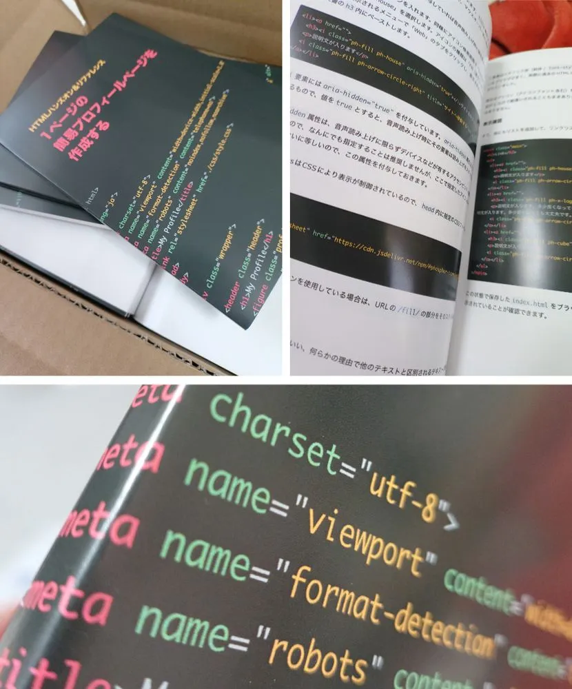

Vivliostyleを利用して技術同人誌を出した所感など
本記事は技術書について書く Advent Calendar 2025 20日目の記事です。
ヤマツと申します。本記事では、Vivliostyleを利用して技術同人誌を出した感想などをつらつらと書いています。つらつら書いてるだけなので、あまり実用的ではないです。
きっかけ
同人誌をつくるとき、基本的にはAdobe Illustratorで原稿をつくっています。
Parts & Tipsというサイトを運営していて、今年HTMLハンズオン＆リファレンス（β）というコンテンツの内容を本にまとめようと思い立ったときに、せっかくだしVivliostyle使ってみるかあ、と思って使ってみることにしました。
Vivliostyle自体は結構前から知っていて、C&R研究所から出ている本も買ってました。CSS組版おもしろそう、という好奇心です。
この本は先日の技術書典19で頒布した新刊ですが、Vivliostyleのセットアップを始めたのは、会期に間に合う執筆〆切（開始時に確実にオンラインマーケットに並ぶ〆切）の3日前でした。オンライン参加だったので、印刷製本を遅らせることができるからこその暴挙。
Vivliostyleのセットアップ
とりあえずセットアップしようというので、セットアップはじめました。筆者はMacです。あとNode.jsはすでにインストール済みの環境です。
Vivliostyleは公式サイトもドキュメントも最初から日本語で用意されています。
公式のチュートリアルがとてもわかりやすいので、チュートリアルのとおりに進めることで、本（PDF）が出来上がります。
チュートリアルではCreate Bookを使用しており、筆者もこれを使って作成しました。
作業するフォルダ内でnpm create book mybookし、質問に入力形式で答えていくことで初期設定が完了します。公式のチュートリアルも詳しいです。
ただ、カスタマイズしているときに気づいたのですが、vivliostyle-cliをインストールしても結果的には同じだったのと、CLIの方がカスタマイズは柔軟のように感じたので、次回は最初からvivliostyle-cliを使うと思います。
なにはともあれセットアップを完了し、Markdown原稿を放り込んでnpm run buildすると、PDFを生成してくれます。npm run previewすると、内部でChromeブラウザ（デベロッパ用）が立ち上がり、プレビューを表示してくれます。
使用したテーマ
Techbookを使用しました。これをベースに、レイアウトや表示まわりをすこしカスタマイズしています。具体的にはこのあたり。
- シンタックスハイライトのテーマカラー
- 標準の
theme-okaidiaだと筆者にはちょっと色味がきつかったので、tomorrow-nightに変更 - VivliostyleはPrism.jsのテーマが利用できる
- 標準の
- ページ余白など調整
テーマをカスタマイズする方法は公式のチュートリアルにもありますが、筆者は直接テーマファイルを修正しました。テーマファイルの場所は結構探してしまったんですが、以下の場所に格納されてます。
/[インストール（作業）ディレクトリ]/.vivliostyle/themes/node_modules/@vivliostyleこのディレクトリの中の以下ファイルを修正して上書きしています。
#シンタックスハイライト用CSS変数ファイル/theme-base/css/lib/prism/theme-okaidia.css
#レイアウトなど/theme-techbook/theme.cssTechbookは最初から「Vivliostyleで技術書を書く」用につくられているのでこれでもじゅうぶんなのですが、個人的にはちょっと痒いところに手の届かない感じはしたので、今後も技術書を書くならいっそのこと自分用のテーマをつくってしまった方がいいなとは思いました。つくろう。
はじめてVivliostyleで技術書書く人は、Techbookのデフォルト設定でもじゅうぶんだと思います。
vivliostyle.config.jsの設定
Create Bookを使用すると、初回インストール時に対話形式である程度設定が入ったvivliostyle.config.jsが生成されるので、これをもとに編集します。以下は最終的なファイル内容です。コメント部分は削除しています。
module.exports = { title: 'HTMLハンズオン＆リファレンス 1ページの簡易プロフィールページを作成する', author: 'Yamatsu <yamatsu@parts-tips.com>', size: 'A5', theme: '@vivliostyle/theme-techbook@^2.0.1', entryContext: './book_data', entry: [ 'chapter0.md', { path: 'toc.md', rel: 'contents' }, 'blank1.md', 'chapter1-cover.md', 'chapter1.md', 'blank2.md', 'chapter2-cover.md', 'chapter2.md', 'chapter2-1.md', 'chapter2-2.md', 'chapter2-3.md', 'chapter3-cover.md', 'chapter3.md', 'chapter3-1.md', 'chapter3-2.md', 'chapter3-3.md', 'chapter3-4.md', 'chapter3-5.md', 'chapter3-6.md', 'chapter4.md', 'appendix-cover.md', 'appendix.md', 'colophon.md' ], toc: { title: '目次', sectionDepth: 3 }}原稿について
原稿はもともとサイト公開用に書いてたMarkdownファイルが揃っていたので、これを使用しています。公開サイトではHonKitを利用しているのですが、Markdownファイルはここで使用しているものをそのまま入れています。
画像だけ、印刷用に解像度やサイズを大きくして書き出しなおしています。
各チャプターの表紙
各チャプターの表紙はそれぞれMarkdownファイルを用意し、以下のように記述してCSSでスタイリングしています。
<div class="chapter">Chapter1</div>
# HTML文書の基本構造をつくる空白ページ
挿入箇所を適宜コントロールしたかったので、今回は空のMarkdownファイルを用意して都度差し込みました。
ひとつのMarkdownファイルを複数箇所で使用すると、ビルドやプレビュー時にエラーになるので、空白ページ分の空のMarkdownファイルを用意します。
目次
目次は自動で作成できますが、今回は手動で。これもチュートリアルにあります。
toc.mdファイルを作成し、以下のように目次を追加します。
# 目次
<nav id="toc" role="doc-toc">
## はじめに
- [はじめに](chapter0.html#はじめに) - [ソースコードのダウンロードについて](chapter0.html#ソースコードのダウンロードについて)
## 1. HTML文書の基本構造をつくる
- [1. HTML文書の基本構造をつくる](chapter1.html) - [ドキュメントタイプ宣言をする](chapter1.html#ドキュメントタイプ宣言をする) - [HTML構造の大枠をつくる](chapter1.html#html構造の大枠をつくる) - [html要素](chapter1.html#html要素) - [head要素](chapter1.html#head要素) - [body要素](chapter1.html#body要素) . . .
</nav>奥付
colophon.mdというファイルを作成し、以下を追加します。
<section id="colophon" role="doc-colophon">
<div class="aside">HTMLハンズオン＆リファレンス</div>
## 1ページの簡易プロフィールページを作成する
2025年11月15日 初版発行
- 発行者 宙駆ける 出張所 ヤマツ- 印刷所 日光企画さま
© 宙駆ける 出張所, 2025
...
</section>さきほどの目次もこの奥付も、CSSはtheme.cssに書いていきます。プレビューはnpm run previewコマンドを使用して、随時確認→CSSファイルやMarkdownファイルを修正して調整していく感じです。
このときにプレビューではChromiumが立ち上がります。CSSはChromiumに対応していればいいので、Google Chromeにしか実装されてないCSSでも結構反映されます。
Vivliostyleの機能なのかTeckbook独自機能なのかはわからないのですが、本文中にあるリンクは、まとめて脚注としてリンクが記載されるようです。
本を生成する
レイアウト校正が終わったら、npm run buildでPDFを生成します。エラーがなければ作業ディレクトリ内にPDFファイルが生成されます。
シンタックスハイライトなど、カラー部分はしっかりカラーで出力されますが、逆にグレースケールでの出力には対応していないようです。
表紙をどうしたか
Vivliostyleは、現在のバージョンではまだカバー画像出力には対応していないようです（まだ、と書かれているので、今後予定があるのかなと思ってる）
表紙もCSSでデザインレイアウトする場合は、Markdownファイルとして一緒に出力できます。
筆者はAdobe Illustratorで表紙だけ別でつくりました。印刷所では表紙と本文データを分けて入稿することが多いので、表紙はpsd形式（イラレで書き出し）、本文はPDF入稿というかんじです。
Vivliostyleをつかってみてどうだったか
かなり面白かったです。CSS組版という概念。レイアウトは基本的にCSSで行うことになるのでデザインの技術書向きではないですが、プログラミングなど文章やコードがメインの技術書であれば、じゅうぶん商業出版でも利用できると感じました。
作業は実質2日で行ったのですが、最初から日本語でドキュメントが整備されているというのは大きかったです（日本発のプロジェクトだからこそという）
ただちょっと痒いところに手の届かない部分もあったりして、そういうところはCSSで無理やりどうにかできるところはどうにかする、または今後の開発に期待。
書籍だけじゃなく業務のドキュメント作成にも使えそう。
今後も技術書を書いていく予定なので、ちょっとずつ使いこなせるようになっていきたいなと、思いました。かなり楽しかったです。
ここまで読んでいただきありがとうございました。
宣伝
Vivliostyleを使って今回制作した本です。BOOTHで通頒しているので、よかったら。PDF版は技術書典のマーケットでも頒布しています。

- HTMLハンズオン＆リファレンス 1ページの簡易プロフィールページを作成する